# non-sparse Graph to simulate from
graph_nonsparse <- readRDS(here::here("data/graph_nonsparse_synth.RDS"))
# sparse DGP
graph_sparse <- readRDS(here::here("data/graph_sparse_synth.RDS"))Centrality
Preparation
Simulate data
Simulate time series data with specific centrality/density
We simulate data from a multilevel model for now.
Load DGP based on estimated network structures:
Setting parameters
We define the conditions and the fixed parameters for the simulation.
# Type of DGP
dgp <- c("sparse", "dense")
# Heterogeneity
heterogeneity <- c("low", "high")
# Design Conditions
df_design <- SimDesign::createDesign(
dgp = dgp,
heterogeneity = heterogeneity
)
# Simulation parameters
# Number of individuals
n_id <- 200
# Number of variables
n_var <- 6
# Number of timepoints
n_tp <- 80
# for regression
reg_error_sd = 1
gimme_var_only = TRUE
# random effects sds
# beta_sd <- 0.1
# kappa_sd <- 0.1
# # Strength of the correlation
# hard-coded down below
# beta_reg <- c(0, 0.2, 0.4)
sim_pars <- list(
n_id = n_id,
n_var = n_var,
n_tp = n_tp,
reg_error_sd = reg_error_sd,
# beta_sd = beta_sd,
# kappa_sd = kappa_sd,
graph_nonsparse = graph_nonsparse,
graph_sparse = graph_sparse,
gimme_var_only = gimme_var_only
)Simulating Data
sim_generate <- function(condition, fixed_objects = NULL){
source(here::here("scripts", "00_functions.R"))
# obtain fixed params
SimDesign::Attach(fixed_objects)
dgp_graph <- ifelse(condition$dgp == "sparse",
"graph_sparse",
"graph_nonsparse")
beta_sd <- ifelse(condition$heterogeneity == "low",
0.05,
0.1)
# scale kappa random effects w.r.t diagonal elements
mean_diag_kappa <- mean(diag(fixed_objects[[dgp_graph]]$kappa))
kappa_sd_low <- 0.05 * mean_diag_kappa
kappa_sd_high <- 0.1 * mean_diag_kappa
kappa_sd <- ifelse(condition$heterogeneity == "low",
kappa_sd_low,
kappa_sd_high)
ml_sim <- sim_gvar_loop(
graph = fixed_objects[[dgp_graph]],
beta_sd = beta_sd,
kappa_sd = kappa_sd,
n_person = n_id,
n_time = n_tp,
n_node = n_var,
max_try = 10000,
listify = TRUE,
sparse_sim = TRUE,
most_cent_diff_temp = TRUE,
most_cent_diff_temp_min = 0.1)
if(any(is.na(ml_sim$beta))){
stop("Generation of Betas failed")
}
if(any(is.na(ml_sim$pcor))){
stop("Generation of PCORs failed")
}
# Obtain true centralities
true_cent <- centrality_mlvar_sim(ml_sim,
sim_fn = "sim_gvar_loop")
# helper to only scale when sd is not 0
scale_nonz <- function(x) {
if (sd(x) == 0) return(x)
return(scale(x))
}
# Extract and scale network features
tempdens <- unlist(true_cent$dens_temp) |> scale_nonz()
if(sd(tempdens) == 0){
stop("No variation in tempdens")
}
outstrength <- sapply(true_cent$outstrength, `[`, 1) |> scale_nonz()
if(sd(outstrength) == 0){
stop("No variation in outstrength")
}
contdens <- unlist(true_cent$dens_cont) |> scale_nonz()
if(sd(contdens) == 0){
stop("No variation in contdens")
}
# Simulate covariate with certain error
eps_sd <- reg_error_sd
# Simulate error
resid_dens <- rnorm(n_id, mean = 0, sd = eps_sd)
resid_cent <- rnorm(n_id, mean = 0, sd = eps_sd)
# correlation matrix of true effects
rho <- c(
1, 0, .2, .4,
0, 1, 0, 0,
.2, 0, 1, 0,
.4, 0 , 0, 1) |> matrix(4, 4, byrow = T)
# cholesky decomposition of rho
L <- chol(rho)
# Generate covariates with multiple levels of correlation
generate_covariate <- function(dens, n_id, L) {
repeat {
covariate <- cbind(dens, rnorm(n_id), rnorm(n_id), rnorm(n_id))
covariate <- covariate %*% L
if (!any(is.na(covariate))) return(covariate)
}
}
# Generate covariate matrices
covariate_temp_dens <- generate_covariate(tempdens, n_id, L)
covariate_cont_dens <- generate_covariate(contdens, n_id, L)
covariate_out_strength <- generate_covariate(outstrength, n_id, L)
# Return data and true centralities
ret_data <- list(
data = ml_sim$data,
beta = ml_sim$beta_l,
kappa = ml_sim$kappa_l,
pcor = ml_sim$pcor_l,
covariate_temp_dens = covariate_temp_dens,
covariate_out_strength = covariate_out_strength,
covariate_cont_dens = covariate_cont_dens,
true_cent = true_cent
)
return(ret_data)
}
dat <- sim_generate(df_design[3,], sim_pars)Prepare Data for Stan
# Concatenate list of data into dataframe with id column
df_data <- dplyr::bind_rows(purrr::map(dat$data, dplyr::as_tibble)
, .id = "ID") %>%
dplyr::mutate(ID = as.factor(ID))Warning: The `x` argument of `as_tibble.matrix()` must have unique column names if
`.name_repair` is omitted as of tibble 2.0.0.
ℹ Using compatibility `.name_repair`.
ℹ The deprecated feature was likely used in the purrr package.
Please report the issue at <https://github.com/tidyverse/purrr/issues>.# indicators for partial correlations
idx_rho <- upper.tri(matrix(1, n_var, n_var, byrow = F)) %>%
c() %>%
which(.)
reg_data <- cbind(dat$covariate_temp_dens[, 2:4],
dat$covariate_cont_dens[, 2:4],
dat$covariate_out_strength[, 2:4])
Y <- df_data %>%
dplyr::select(-"ID") %>%
as.matrix()
# Prepare stan data
stan_data <- list(
K = n_var,
I = n_id,
P = 9,
# number of regression outcomes
N_total = n_id * n_tp,
n_t = rep(n_tp, n_id),
n_pc = n_var * (n_var - 1) / 2,
idx_rho = array(idx_rho, dim = length(idx_rho)),
Y = Y,
reg_covariate = reg_data,
sparsity = 2
)Compile Model
# Choose model to fit
model_name <- "MLVAR_lkj_only"
# Compile model
mlvar_model <-
rstan::stan_model(
file = here("scripts", "models", paste0(model_name, ".stan")),
model_name = model_name#,
# verbose = TRUE,
# warn_pedantic = TRUE,
# warn_uninitialized = TRUE
)Warning in readLines(file, warn = TRUE): unvollständige letzte Zeile in
'D:\DDRM\centrality-uncertainty\scripts\models\MLVAR_lkj_only.stan' gefundenRun Sampler
fit_bmlvar <- rstan::sampling(
object = mlvar_model,
pars = c("Beta_raw", "L_Theta", "Intercepts_raw"),
include = FALSE,
data = stan_data,
seed = 35032,
chains = 4,
cores = 4,
warmup = 500,
iter = 1000,
init = .1,
control = list(adapt_delta = 0.8),
verbose = FALSE
)
saveRDS(fit_bmlvar, here("fits", paste0(model_name, "_fit.rds")))fit_bmlvar <- readRDS(here("fits", paste0(model_name, "_fit.rds")))param_ests <- summary(fit_bmlvar)$summary %>%
as.data.frame() %>%
rownames_to_column("parameter")Effective sample size (ESS) & Rhat Plots
# color scheme
color_scheme_set(scheme = "purple")
# Effective sample sizes
plot_neff <-
mcmc_neff_hist(bayesplot::neff_ratio(fit_bmlvar), binwidth = .01) +
labs(title = "A") +
guides(color = "none", fill = "none") +
theme(
legend.text = element_blank(),
legend.key = element_blank(),
title = element_text(size = 16, face = "bold")
)Warning: Dropped 4602 NAs from 'new_neff_ratio(ratio)'.# Rhat
plot_rhat <-
bayesplot::mcmc_rhat_hist(bayesplot::rhat(fit_bmlvar)) +
labs(title = "B") +
guides(color = "none", fill = "none") +
theme(
legend.text = element_blank(),
legend.key = element_blank(),
title = element_text(size = 16, face = "bold")
) +
yaxis_text(on = TRUE)Warning: Dropped 4601 NAs from 'new_rhat(rhat)'.# Combined plot
plot_diagnostics <- grid.arrange(plot_neff, plot_rhat, ncol = 2)`stat_bin()` using `bins = 30`. Pick better value with `binwidth`.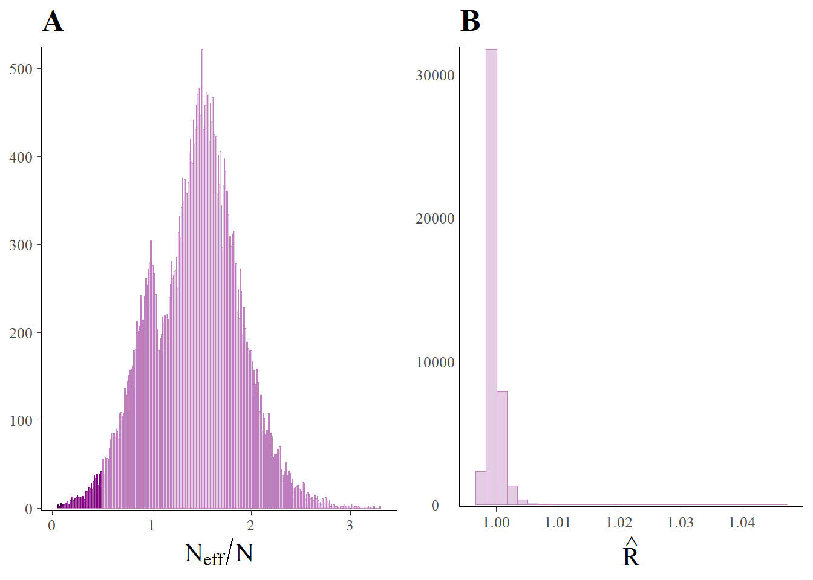
Sampler Diagnostics
rstan::check_hmc_diagnostics(fit_bmlvar)
Divergences:0 of 2000 iterations ended with a divergence.
Tree depth:0 of 2000 iterations saturated the maximum tree depth of 10.
Energy:E-BFMI indicated no pathological behavior.# lp <- log_posterior(fit_bmlvar)
# np <- nuts_params(fit_bmlvar)
# mcmc_nuts_divergence(np, lp)Trace Plots
# pars <- c(
# "Beta",
# "Beta_out_strength",
# "mu_Beta",
# "sigma_Beta",
# "mu_Intercepts",
# "sigma_Intercepts",
# "reg_intercept",
# "reg_slope_density",
# "reg_residual",
# "Intercepts",
# "Sigma",
# "Rho_vec",
# "Beta_out_strength",
# "Beta_in_strength",
# "Rho_centrality",
# "mu_regression"
# )
# div_style <- parcoord_style_np(div_color = "green", div_size = .5, div_alpha = 1)
#
# for(x in 1:length(pars)) {
# posterior <- as.array(fit_bmlvar, pars[x])
#
# print(mcmc_parcoord(posterior, np = np, alpha = .1, np_style = div_style))
# }# Transpose beta matrices for later summaries
# in the DGP, cols represent lagged vars
# but in BmlVAR, rows represent lagged vars
ests_bmlvar <- extract_all_estimates(fit_bmlvar,
n_id = n_id,
n_var = n_var,
transpose_beta = TRUE)
# Obtain centralities
dens_temp_bmlvar <- ests_bmlvar$tempdens_est$median
dens_cont_bmlvar <- ests_bmlvar$contdens_est$median
# Obtain centralities
dens_temp_bmlvar <- ests_bmlvar$tempdens_est$median
dens_cont_bmlvar <- ests_bmlvar$contdens_est$median
outstrength_bmlvar <- ests_bmlvar$outstrength_est$median
strength_bmlvar <- ests_bmlvar$pcor_centrality_est$median
outstrength_bmlvar_first <- sapply(ests_bmlvar$outstrength_est$median, function(x) unname(x[1]))
# Obtain regression coefficients
reg_bmlvar <- list(
regression_intercept = ests_bmlvar$regression_intercept_est,
regression_slope = ests_bmlvar$regression_slope_est)Parameter Recovery
Betas
Beta_vec <-
rstan::summary(fit_bmlvar, pars = "Beta", probs = .5)[["summary"]][,4] %>%
unlist()
Beta_true_vec <- dat$beta %>% map(., function(x)t(x)) %>% unlist()
cor.test(Beta_vec, Beta_true_vec, method = "pearson")
Pearson's product-moment correlation
data: Beta_vec and Beta_true_vec
t = 152.39, df = 7198, p-value < 2.2e-16
alternative hypothesis: true correlation is not equal to 0
95 percent confidence interval:
0.8681455 0.8790808
sample estimates:
cor
0.8737235 cor.test(Beta_vec, Beta_true_vec, method = "spearman")Warning in cor.test.default(Beta_vec, Beta_true_vec, method = "spearman"): Kann
exakten p-Wert bei Bindungen nicht berechnen
Spearman's rank correlation rho
data: Beta_vec and Beta_true_vec
S = 1.2564e+10, p-value < 2.2e-16
alternative hypothesis: true rho is not equal to 0
sample estimates:
rho
0.7980271 # plot
plot(Beta_vec,Beta_true_vec, xlim = c(-1.5, 1.5), ylim = c(-1.5, 1.5))
abline(a = 0, b = 1, col = "red")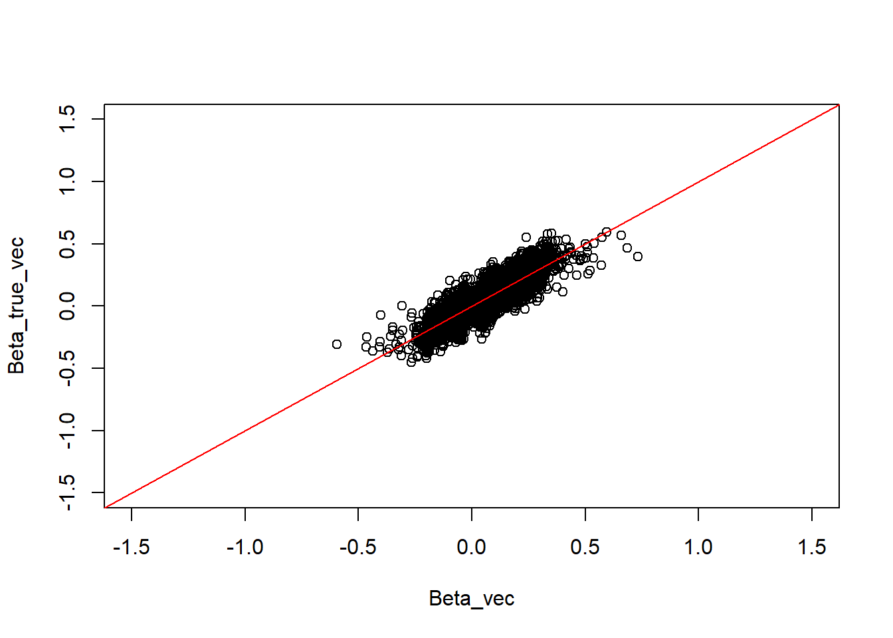
Regression
bayesplot::mcmc_recover_intervals(
true = rep(c(0, .2, .4),3),
x = rstan::extract(object = fit_bmlvar, "reg_slope_density_z") %>% do.call(cbind, .) %>%
as_draws_matrix()
)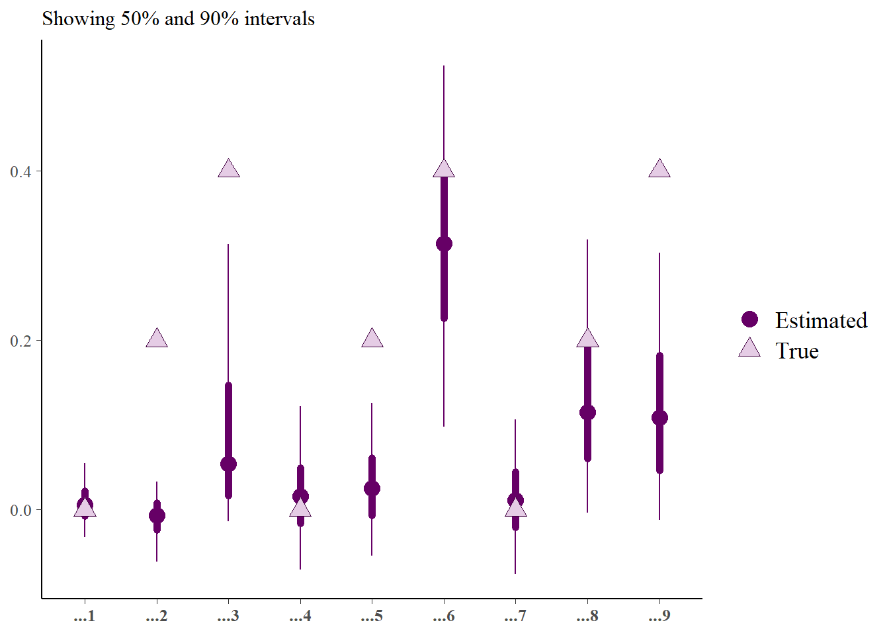
bayesplot::mcmc_intervals(
x = rstan::extract(object = fit_bmlvar, "reg_slope_density_z") %>% do.call(cbind, .) %>%
as_draws_matrix()
)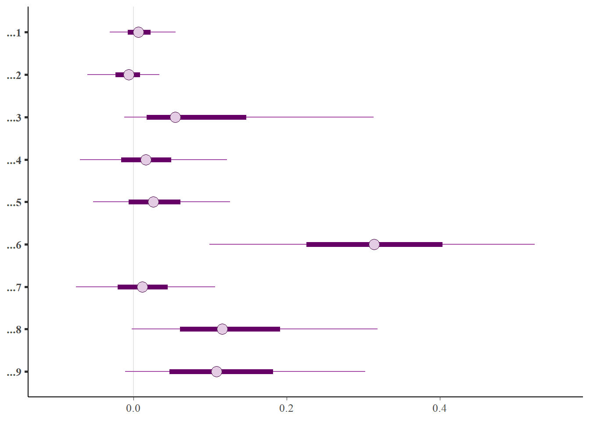
bayesplot::mcmc_recover_intervals(
true = rep(0,9),
x = rstan::extract(object = fit_bmlvar, c("reg_intercept_z")) %>% do.call(cbind, .) %>%
as_draws_matrix()
)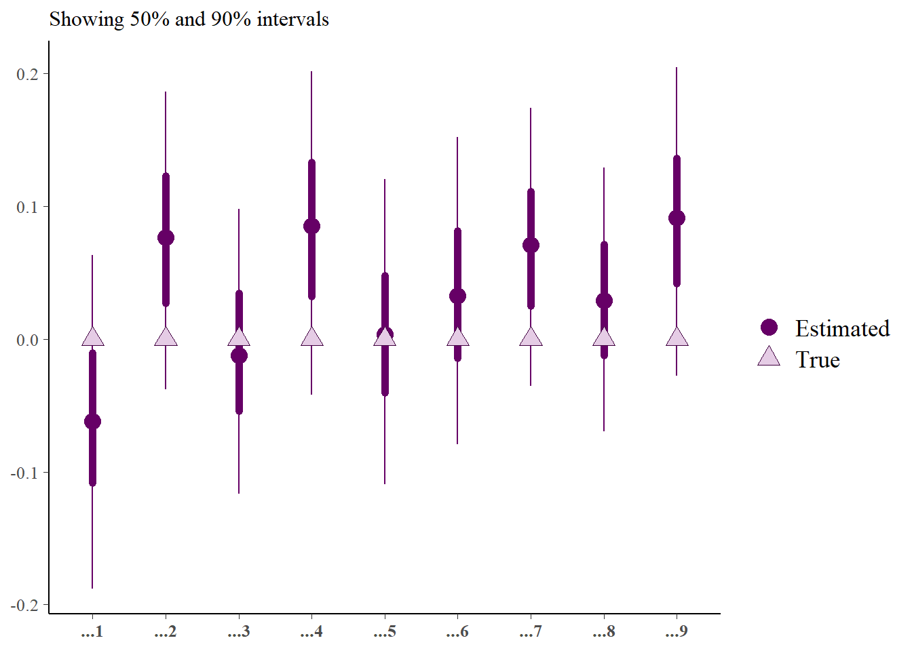
bayesplot::mcmc_intervals(
x = rstan::extract(object = fit_bmlvar, c("reg_intercept_z")) %>% do.call(cbind, .) %>%
as_draws_matrix()
)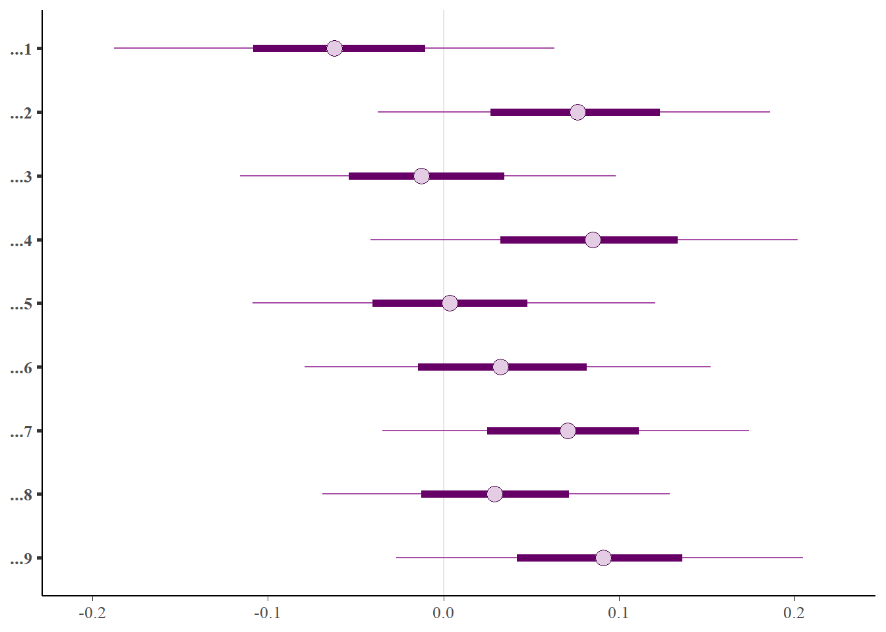
Partial Correlations
Rho_vec <-
rstan::summary(fit_bmlvar, pars = "Rho", probs = .5)[["summary"]][,4] %>%
unlist()
Rho_true_vec <- dat$pcor %>% map(., function(x)t(x)) %>% unlist()
cor.test(Rho_vec, Rho_true_vec, method = "pearson")
Pearson's product-moment correlation
data: Rho_vec and Rho_true_vec
t = 132.57, df = 7198, p-value < 2.2e-16
alternative hypothesis: true correlation is not equal to 0
95 percent confidence interval:
0.8354418 0.8488699
sample estimates:
cor
0.8422865 cor.test(Rho_vec, Rho_true_vec, method = "spearman")Warning in cor.test.default(Rho_vec, Rho_true_vec, method = "spearman"): Kann
exakten p-Wert bei Bindungen nicht berechnen
Spearman's rank correlation rho
data: Rho_vec and Rho_true_vec
S = 1.3673e+10, p-value < 2.2e-16
alternative hypothesis: true rho is not equal to 0
sample estimates:
rho
0.7801998 # plot
plot(Rho_vec, Rho_true_vec, xlim = c(-1, 1), ylim = c(-1, 1))
abline(a = 0, b = 1, col = "red")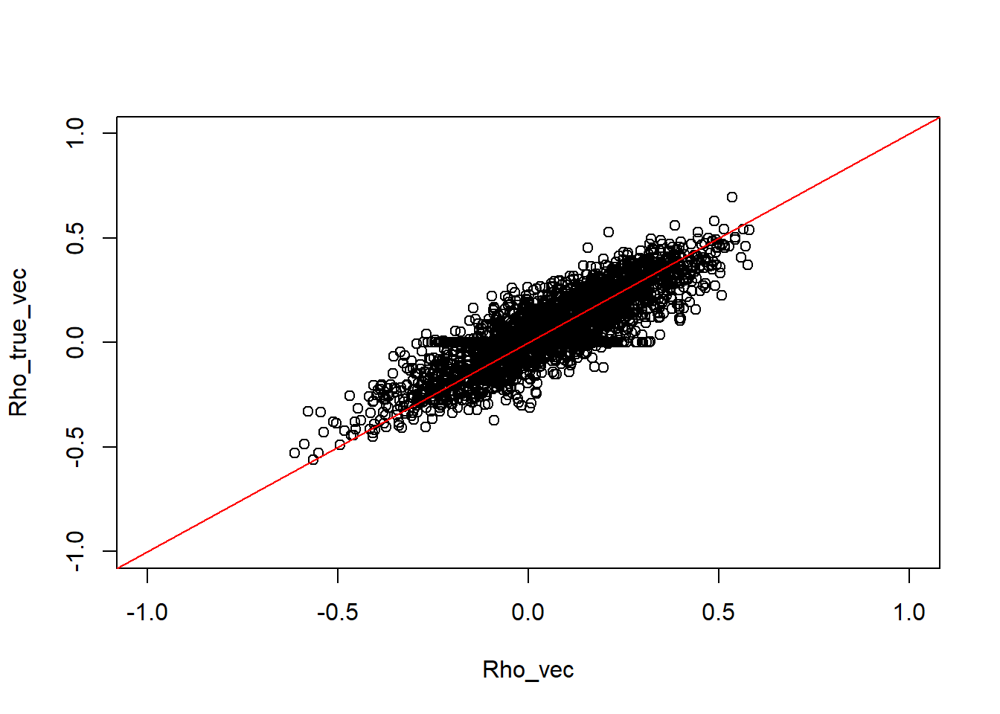
Centrality
Beta Density
Beta_density <- ests_bmlvar$tempdens_est$median
Beta_density_true <- dat$true_cent$dens_temp %>% unlist()
cor.test(Beta_density, Beta_density_true, method = "pearson")
Pearson's product-moment correlation
data: Beta_density and Beta_density_true
t = 11.451, df = 198, p-value < 2.2e-16
alternative hypothesis: true correlation is not equal to 0
95 percent confidence interval:
0.5397191 0.7079402
sample estimates:
cor
0.6311954 cor.test(Beta_density, Beta_density_true, method = "spearman")
Spearman's rank correlation rho
data: Beta_density and Beta_density_true
S = 475646, p-value < 2.2e-16
alternative hypothesis: true rho is not equal to 0
sample estimates:
rho
0.6432566 # plot
plot(Beta_density, Beta_density_true, xlim = c(0, .2), ylim = c(0, .2))
abline(a = 0, b = 1, col = "red")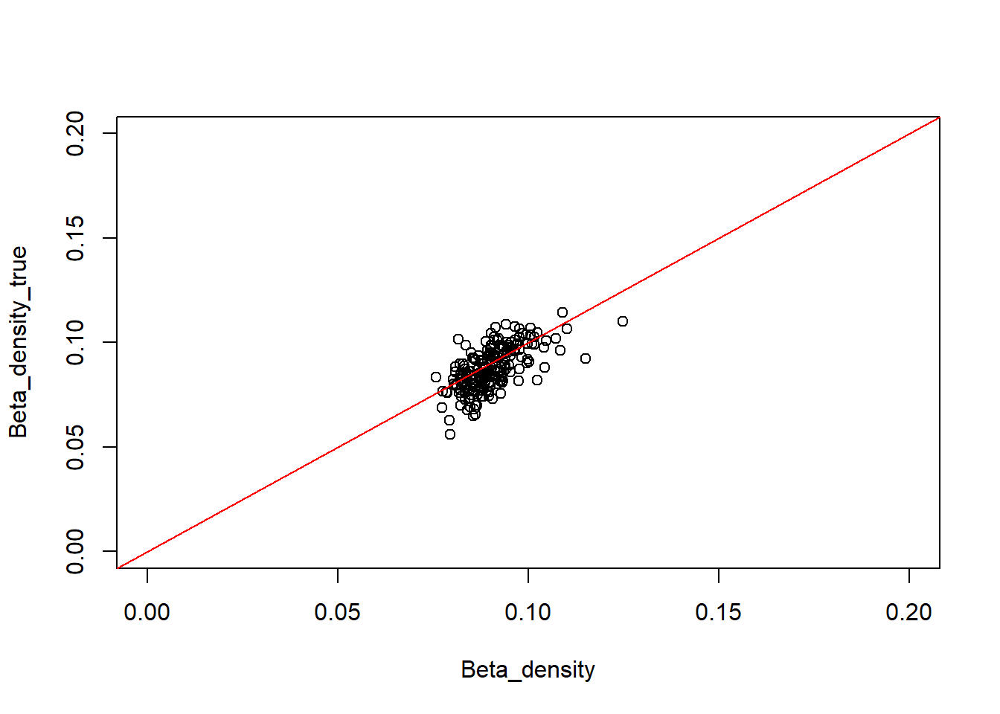
In-Strength
in_strength <- rstan::summary(fit_bmlvar, pars = "Beta_in_strength", probs = .5)[["summary"]][, 4] %>%
unlist()
in_strength_true <- dat$true_cent$instrength %>% unlist()
cor.test(in_strength, in_strength_true, method = "pearson")
Pearson's product-moment correlation
data: in_strength and in_strength_true
t = 66.397, df = 1198, p-value < 2.2e-16
alternative hypothesis: true correlation is not equal to 0
95 percent confidence interval:
0.8740173 0.8982623
sample estimates:
cor
0.8867481 cor.test(in_strength, in_strength_true, method = "spearman")
Spearman's rank correlation rho
data: in_strength and in_strength_true
S = 37610384, p-value < 2.2e-16
alternative hypothesis: true rho is not equal to 0
sample estimates:
rho
0.8694083 # plot
plot(in_strength, in_strength_true, xlim = c(0, .25), ylim = c(0, .25))
abline(a = 0, b = 1, col = "red")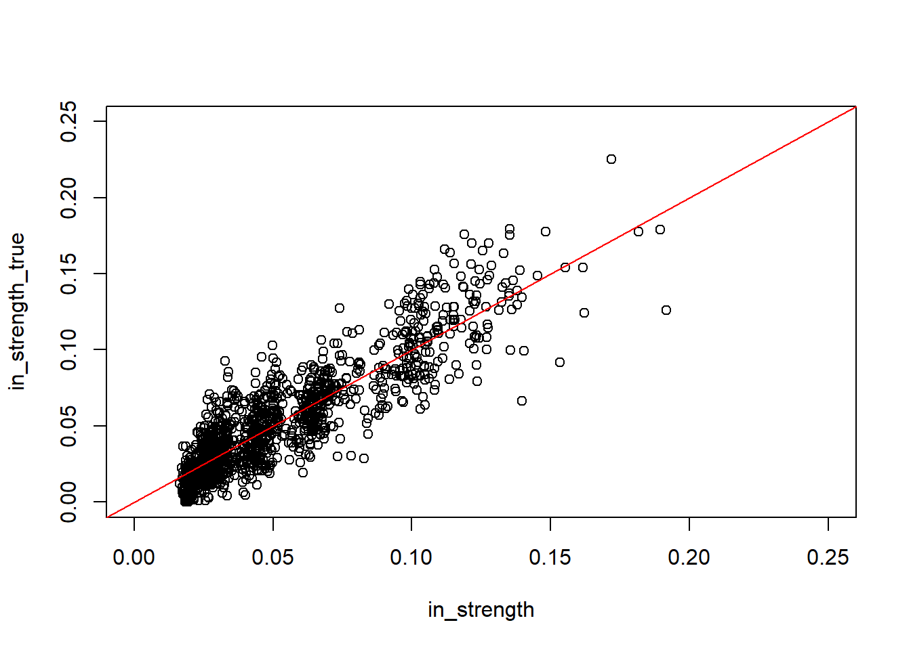
Out-Strength
out_strength <- ests_bmlvar$outstrength_est$median %>% unlist()
out_strength_true <- dat$true_cent$outstrength %>% unlist()
cor.test(out_strength, out_strength_true, method = "pearson")
Pearson's product-moment correlation
data: out_strength and out_strength_true
t = 62.967, df = 1198, p-value < 2.2e-16
alternative hypothesis: true correlation is not equal to 0
95 percent confidence interval:
0.8625167 0.8888436
sample estimates:
cor
0.876333 cor.test(out_strength, out_strength_true, method = "spearman")
Spearman's rank correlation rho
data: out_strength and out_strength_true
S = 43158290, p-value < 2.2e-16
alternative hypothesis: true rho is not equal to 0
sample estimates:
rho
0.8501447 # plot
plot(out_strength,
out_strength_true,
xlim = c(0, .3),
ylim = c(0, .3))
abline(a = 0, b = 1, col = "red")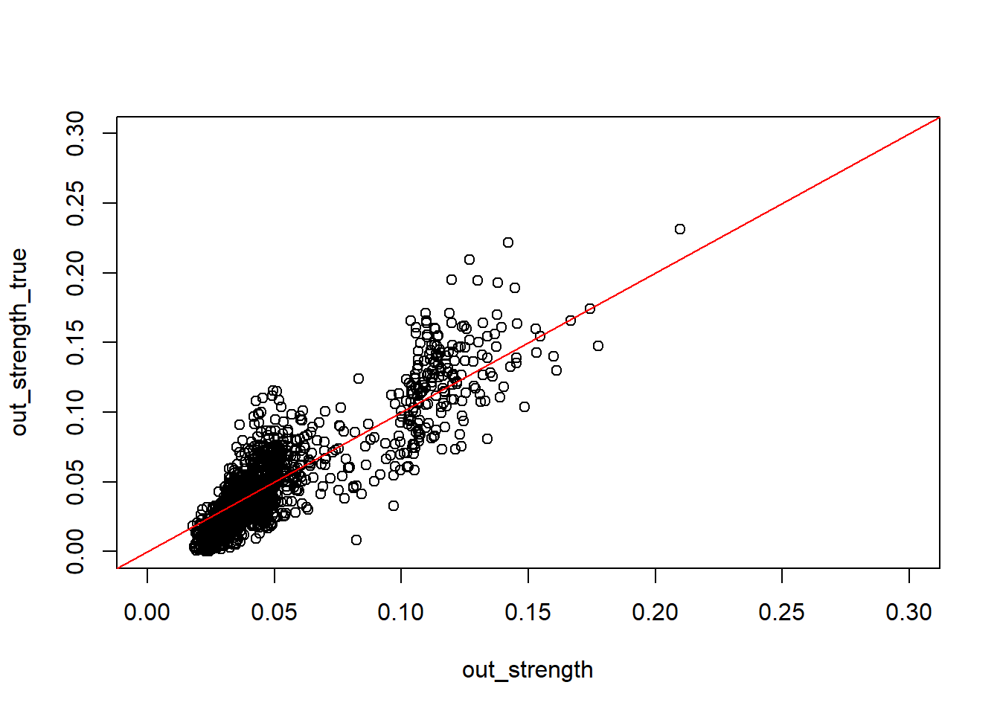
PCOR Centrality
Rho_strength <- ests_bmlvar$contdens_est$median
Rho_strength_true <- dat$true_cent$dens_cont %>% unlist()
cor.test(Rho_strength, Rho_strength_true, method = "pearson")
Pearson's product-moment correlation
data: Rho_strength and Rho_strength_true
t = 15.663, df = 198, p-value < 2.2e-16
alternative hypothesis: true correlation is not equal to 0
95 percent confidence interval:
0.6747892 0.8000560
sample estimates:
cor
0.7438869 cor.test(Rho_strength, Rho_strength_true, method = "spearman")
Spearman's rank correlation rho
data: Rho_strength and Rho_strength_true
S = 361442, p-value < 2.2e-16
alternative hypothesis: true rho is not equal to 0
sample estimates:
rho
0.7289117 # plot
plot(Rho_strength, Rho_strength_true, xlim = c(0, .25), ylim = c(0, .25))
abline(a = 0, b = 1, col = "red")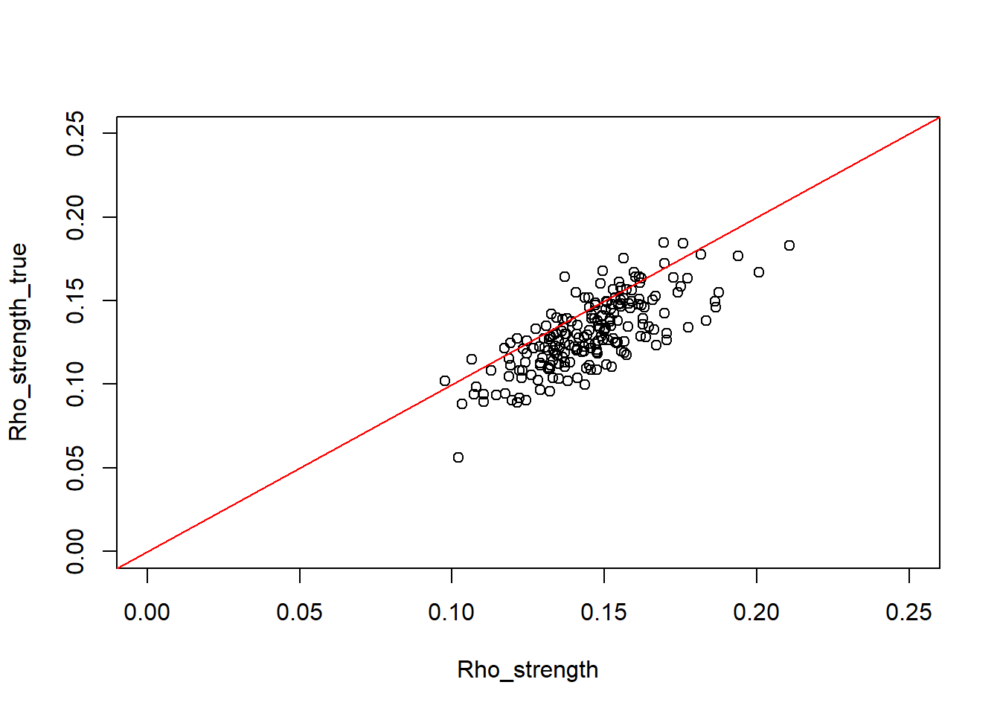